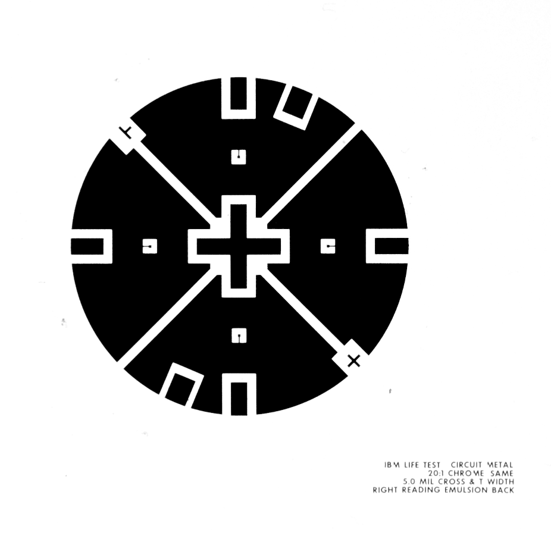
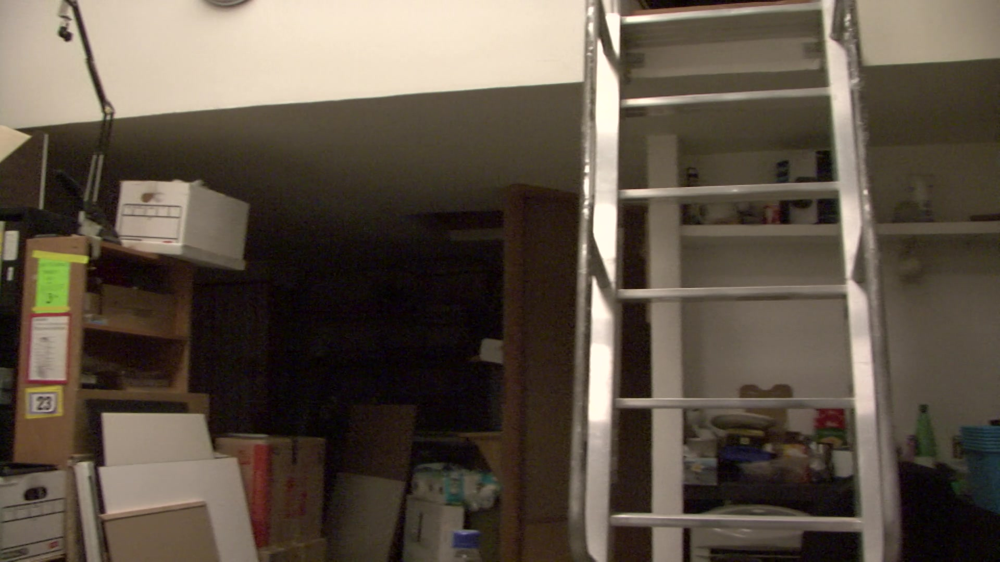
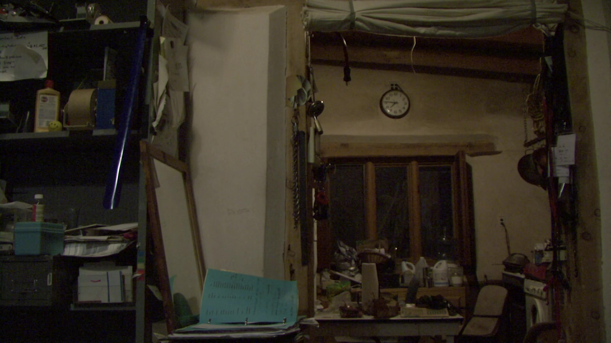
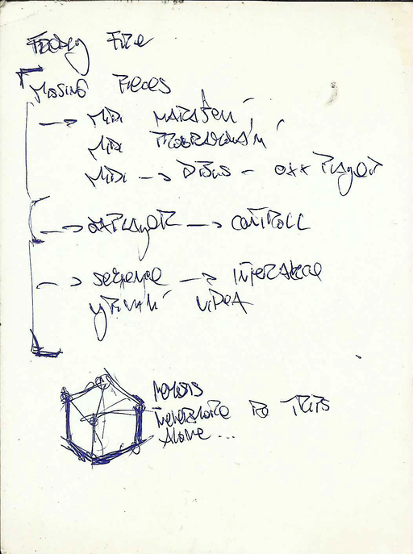
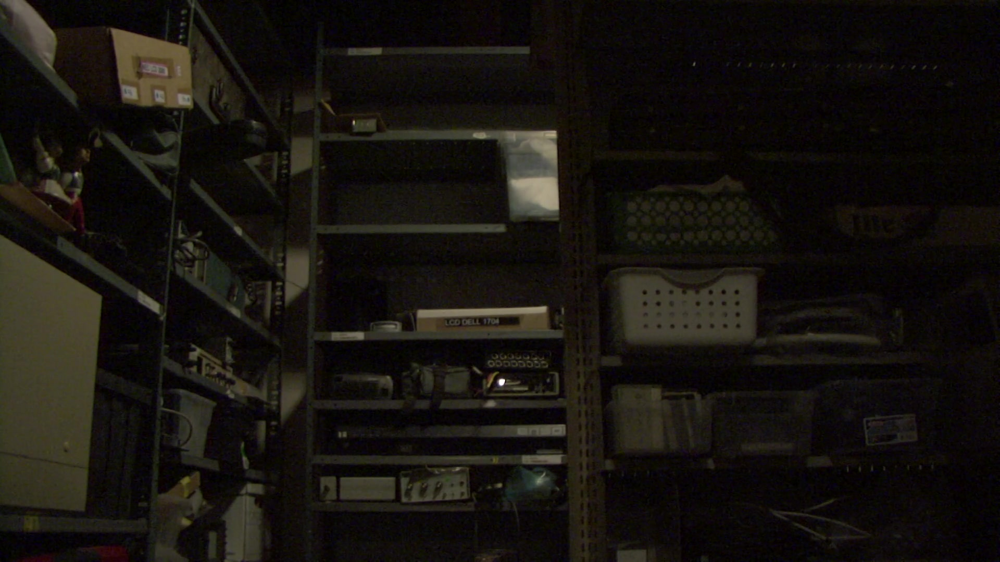
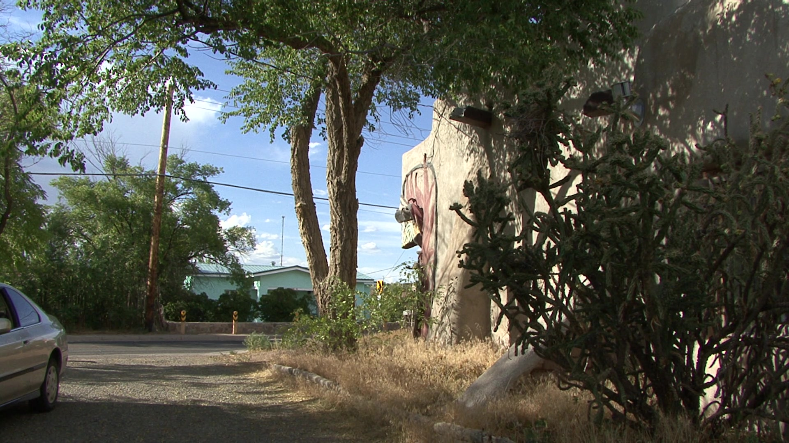
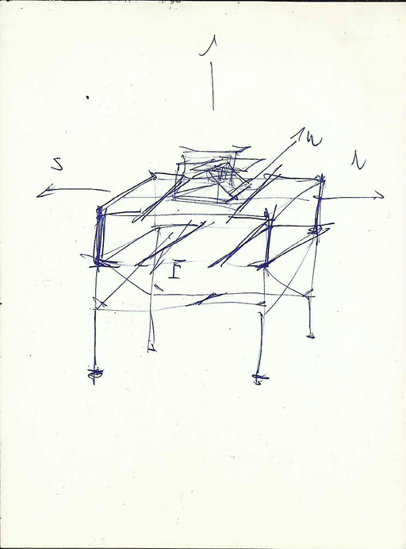

"Neznám mnoho palčivějších pocitů než představa jakkoli nepřekonatelné výzvy, která je pro svoji domnělou nepřekonatelnost odmítnuta...
Dílo neexistuje, nemá-li kontext." — Kryštof Pešek, Santa Fe, 23. 7. 2016
Digitální a kybernetické umění 90. let umírá v depozitářích jako "technologická fosilie". Kurátoři se bojí spálených relé a mrtvých sběrnic.
Cílem nebylo vystavit nefunkční hliníkové torzo za sklem, ale obnovit plnou kinetickou a sonickou choreografii v původním rytmu autorů.
Woody Vašulka v 90. letech radikálně opouští čistě obrazové experimenty s Rutt/Etra scan procesorem a vrhá se do dekonstrukce válečných technologií:

Výzva: Každý z těchto systémů pocházel z jiného technologického paradigmatu.
Po demontáži výstavy v Tokiu v roce 1998 byl stůl rozložen na součástky a uložen do přepravních beden v Santa Fe:
Obecný verdikt kurátorů: "Nemožné zprovoznit, chybí LaserDisc a řídicí elektronika."
1. Hardwarová smrt: Mechanická relé, optické disky, proprietární karty ISA/PCI.
2. Softwarová smrt: Linux kernel 2.0.x, nedokumentované binárky pro SGI IRIX MIPS.
3. Ztráta kontextu: Kdo ví, jak přesně měly písty dýchat a co měl pad vyvolávat?
Telefonát od Jennifer Helia DeFelice (FaVU VUT) zprostředkovaný Milošem Vojtěchovským: "Woody potřebuje někoho do Santa Fe, kdo oživí Friendly Fire pro výstavu na Špilberku."

Pronajatý sklad: Temná komora plná hliníkových profilů a beden z Tokia 1998. Zde ležel původní pevný disk i386 a písty.
Tovární hala: Dočasná laboratoř. Nalezení translucentních pláten, montážní stůl, tlakování kompresoru a noční programování.
Dům Vašulkových: Archiv původních analogových pásů, NTSC DV kazet, optiky a osobních vzpomínek u večeře.
"Každý den začínal kávou na Agua Fria, pokračoval prohrabáváním beden na Rodeo Road a končil v noci na Ruffina Street při syčení unikajícího vzduchu z pístů."
Ačkoliv Steina vždy tvrdila: "Já s Friendly Fire nemám nic společného, to je čistě Woodyho válečný stůl," její role byla klíčová:

Na dně krabice s napájecími zdroji byl nalezen originální plotnový disk z řídicího PC instalace (Intel i386):
ddrescue./home/woody/
├── actor1.c # Jádro choreografie
├── optodd.c # Ovladač Opto 22
├── mididd.c # MIDI listener (/dev/cua0)
├── usc/ # SGI síťový démon
└── minicom/
└── PITT.TXT # Log z 8. března 1997!Namísto snahy o shánění fyzické základní desky z roku 1997 byl diskový obraz spuštěn ve virtuálním stroji QEMU přímo na moderním notebooku v hale na Ruffina Street:
# Spuštění zrestaurovaného disku v QEMU
qemu-system-i386 -hda friendlyfire_1998.img -m 64 -serial pty -parallel /dev/parport0Virtuální stroj nabootoval, spustil systémové démony a začal chrlit instrukce do virtuálních portů. Tím byla zachráněna originální logika časování bez nutnosti odhadovat prodlevy.
Systém neřídil jeden monolitický program, ale elegantní modulární UNIXová architektura UNICOM vyvinutá pro Woodyho výzkumníky Russellem Gritzem a Brucem Hamiltonem.
actor1: Interpret událostí v reálném čase. Čte skripty a synchronizuje LaserDisc s písty.optodd: Démon obsluhující relé Opto 22 přes paralelní port /dev/lp1.mididd: Démon čtoucí signály z Roland padu přes sériový port /dev/cua0.picdd: Ovladač krokových motorů.usc (UNICOM Socket Commander): IPC socketové rozhraní propojující Linux PC se stanicí SGI O2.
V adresáři Minicomu byl nalezen textový soubor minicom/PITT.TXT s časovým razítkem 8. března 1997. Šlo o přesný záznam komunikace mezi actor1 a LaserDiskem:
# minicom/PITT.TXT (úryvek z 8. 3. 1997)
d08 for 1 # Carousel slide advance
5se1801pl # Laserdisc seek frame 5 & play
echo -n "\332" > /dev/lp1 # Clona nahoru (Opto 22)
wait 12 # Prodleva vteřin
echo -n "\300" > /dev/lp1 # Clona dolů
29082sepl # Skok na frame 29082Tento soubor byl hudební partiturou instalace. Odhalil:
"Zachovat tělo a senzorickou zkušenost v plné autenticitě; nahradit zaniklé a neudržitelné vnitřní orgány otevřeným, trvanlivým systémem."
Původní obří průmyslová deska Opto 22 na paralelní port byla neopravitelná. Místní spolupracovník Charles Tuttle navrhl kompaktní náhradu:
1997 (Paralelní port /dev/lp1):
echo -n "\332" > /dev/lp1 # Octal maska2016 (Arduino Serial /dev/ttyACM0):
echo -n "/1100000" > /dev/ttyACM0 # ASCII maska reléPůvodní LaserDisc přehrávač Pioneer se sériovým ovládáním byl nenávratně pryč. Jak zachovat stejnou odezvu a kvalitu?
yadif) do bezztrátového H.264.omxplayer akcelerovaným na GPU.# D-Bus ovládání omxplayeru z daemonu
dbuscontrol.sh seek $TARGET_MICROSECONDS
# Posun o políčko zpět
dbuscontrol.sh stepOdezva skoku: < 80 ms, identická s mechanickým seekem optické hlavy LaserDisku.
/* actor1.c (1997) */
fd_lp = open("/dev/lp1", O_WRONLY);
write(fd_lp, "\332", 1); /* Písty nahoru */
/* Laserdisc přes RS-232 /dev/cua1 */
write(fd_ser, "5se1801pl\r", 10);
/* Diaprojektor */
write(fd_ser, "d08 for 1\r", 10);Proprietární porty, nutnost root oprávnění, závislost na ISA sběrnici.
# run.sh & Arduino relay board (2016)
echo -n "/1100000" > /dev/ttyACM0 # Písty
# Raspberry Pi D-Bus seek
./scripts/dbuscontrol.sh setposition 1801000
# Carousel trigger přes SSR relé 8
echo -n "/00000001" > /dev/ttyACM0
sleep 0.1
echo -n "/00000000" > /dev/ttyACM0Standardní POSIX shell, USB serial, nezávislost na konkrétním železe.
Největší předností a zároveň výzvou mediální archeologie se žijícími autory je fakt, že dílo není definitivně uzavřené:

Když se na Ruffina Street poprvé rozběhla synchronní projekce z Raspberry Pi, Steina poslouchala zvuk v hale a řekla:
"Ten industriální dron je moc nahlas. Dialogy operátorů a vojáků jsou utopené. Musíte je vytáhnout do popředí – v těch slovech je celý smysl Friendly Fire!"

Autentický rozhovor zaznamenaný Kryštofem Peškem na Zoom H2n v domě Vašulkových na Agua Fria Road v předvečer odeslání beden do Evropy:
Steina a Woody reflektují mechaniku Brotherhoodu, strojírenské kořeny v Brně a vztah k válečnému materiálu.
"Woody sedí u stolu, kouří a s úsměvem říká, že stůl je připraven zabíjet své vlastní lidi. Steina se směje a připomíná, ať nezapomeneme přibalit náhradní optiku."
Rozložený a otestovaný stůl byl zabalen do dřevěných přepravních beden (záznam crates.txt):
Crate #1: Aluminum frame & pistons
Weight: 32 kg, Dimensions: 140x60x40 cm
Crate #2: Kodak Carousel & optics
Weight: 21 kg, Dimensions: 60x50x50 cm
Crate #3: Electronics & controllers
Weight: 14 kg, Dimensions: 50x40x30 cm
Total weight: 67 kgCíl určení: Hrad Špilberk, Muzeum města Brna.
Woody Vašulka se symbolicky vrátil do svého rodného Brna. Instalace Friendly Fire byla srdcem velké retrospektivy:
cron a skript run.sh.
Klíčovým prvkem Friendly Fire je zapojení diváka do válečné mašinérie:
Divák není pasivní pozorovatel, stává se operátorem zbraňového systému.
Zvuk pístů a padajících clon nebyl chybou, ale akustickou součástí kompozice. Kovový rachot a syčení vzduchu demonstrovaly syrovost vojenské mechaniky.
Proprietární protokoly a černá železa umírají. Pouze otevřený hardware (Arduino, RPi) a svobodný software (C, Bash, Linux) zaručují, že dílo bude žít i za 30 let.
Restaurování se žijícími autory není pasivní archivace, ale pokračování tvůrčího dialogu. Autor má právo korigovat vyznění díla pro novou dobu.
Nejlepší dokumentací není suchý teoretický text, ale funkční, komentovaný a verzovaný kód v gitu. Kód je samotným partem instalace.
"Mediální archeologie není věda o mrtvých přístrojích. Je to umění znovu rozběhnout dialog mezi člověkem, elektřinou a mechanickým pohybem."
Veškerá práce ze Santa Fe i Špilberku je trvale dostupná ve veřejném repozitáři:
github.com/k0f/friendlyfire
LOG.md.Dotazy, diskuse & sdílení zkušeností